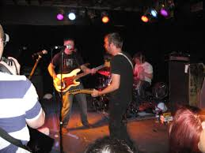
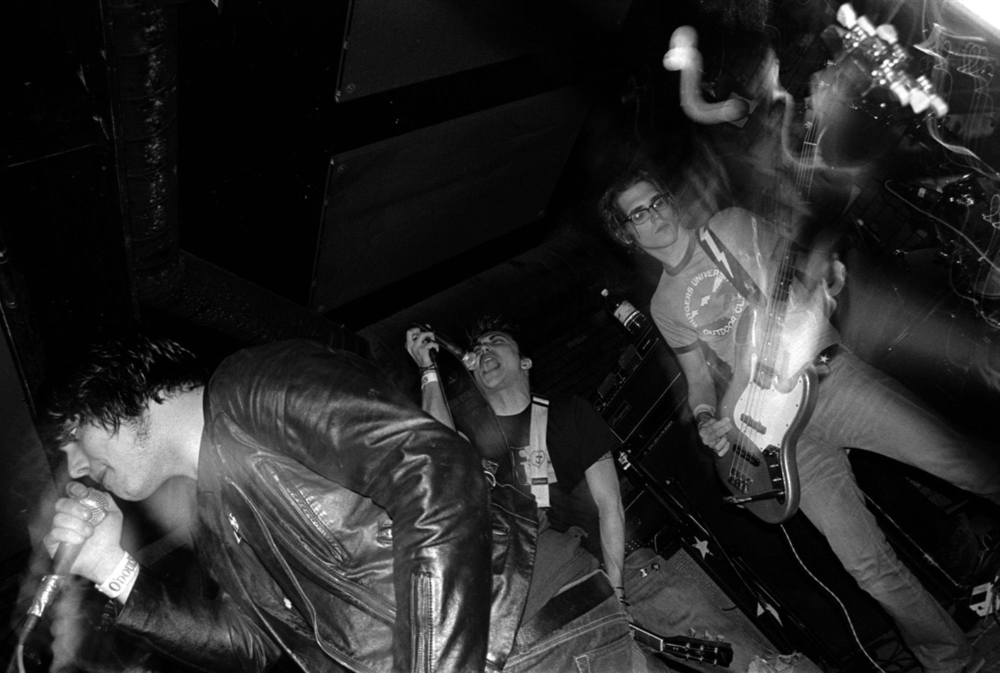

Eras
As previously mentioned, the genre has undergone many changes throughout the decades, each wave having different inspirations, allowing the next generation to follow in the same footsteps and mold Emo in their own ways, signifying what it means to them.
First Wave
Starting in the early to mid-80s, Emocore was yet to be a title given to any bands, as the differing sound was post-hardcore. Since Emo is technically a subgenre, it all began in the Washington, D.C. area in the United States.
Also called emocore—emerged in the mid-1980s as an offshoot of the Washington, D.C. hardcore punk scene. Bands like Rites of Spring, Embrace (fronted by Ian MacKaye of Minor Threat and later Fugazi), and Moss Icon are often cited as foundational.
What set first-wave emo apart from straight hardcore was its raw, intensely personal lyrics and more dynamic, emotionally driven songwriting. The sound still had the aggressive edge of punk, but it incorporated more melody, varied song structures, and expressive vocals—sometimes screamed, sometimes sung.
Though the term emo was initially used somewhat derisively within the punk scene, it stuck. First wave emo laid the groundwork for later waves by pushing emotional vulnerability and introspection to the forefront of punk music.

Second Wave
Often called midwest emo, it emerged in the early-to-mid 1990s and marked a major shift from the raw aggression of the first wave. While it kept the emotional intensity, it introduced more melodic, intricate instrumentation and often leaned toward indie rock rather than hardcore punk.
This wave took root in cities like Chicago, Champaign, and Cleveland—hence the "Midwest" label, though not all bands were from that region. Bands like Sunny Day Real Estate, Mineral, The Promise Ring, Braid, Cap’n Jazz, and Christie Front Drive defined the sound.
Characteristics of the second wave emo:
- Twangy, clean guitar tones, often with intricate, interweaving parts
- Dynamic shifts between quiet and loud sections
- Lyrics that were personal, poetic, and often cryptic
- More melodic and less aggressive than the first wave
- A strong connection to DIY ethics and indie labels like Jade Tree, Polyvinyl, and Deep Elm
While first-wave emo was tied to hardcore scenes, second-wave emo was more aligned with indie and college rock circles. Sunny Day Real Estate, for example, brought a lush, almost spiritual atmosphere to emo, while Cap’n Jazz fused chaotic energy with playfully fragmented lyrics.
Though still underground at the time, this wave laid the sonic and cultural foundation for the more mainstream third wave emo explosion in the early 2000s.
Third Wave
Emerging in the late 1990s and exploding into mainstream popularity in the early to mid-2000s, it blended emo’s emotional core with pop-punk, alternative rock, and post-hardcore, resulting in a more polished, accessible, and radio-friendly sound. This is the era most people think of when they hear "emo"—black eyeliner, MySpace pages, side-swept bangs, and emotionally charged choruses.
- Polished production and big hooks
- Lyrics often focused on teen angst, heartbreak, identity, and alienation
- Fusion of genres: emo with pop-punk, screamo, alt-rock, and post-hardcore
- Heavy presence on MTV, Warped Tour, and MySpace
- A distinct visual aesthetic—dark clothing, dyed hair, band merch
While the third wave brought emo into the cultural spotlight, it also sparked controversy and backlash. Critics argued it diluted the genre’s original rawness and DIY spirit, and some early emo fans rejected the new "mainstream emo" as overly commercial or inauthentic.
Fourth Wave
Often referred to as the emo revival, it began in the early 2010s as a reaction against the polished, commercial sound of the third wave. It marked a return to the DIY ethos, lo-fi aesthetics, and emotional sincerity of the second wave, while also embracing modern indie rock, math rock, and post-rock influences.
- Lo-fi or raw production, with emotional immediacy over perfection
- Twinkly guitar work (influenced by Midwest emo and math rock)
- Often spoken-word or shouted vocals, paired with abstract or confessional lyrics
- Emphasis on vulnerability, identity, depression, queerness, and mental health
- Distribution and growth through online platforms like Bandcamp, Reddit, and DIY social media scenes
Fifth Wave
Fifth-wave emo is a loosely defined and still-evolving movement that emerged in the late 2010s into the 2020s. It builds on the fourth wave’s DIY roots and emotional rawness but pushes emo into new territories—sonically, culturally, and politically.
Where previous waves had clearer sonic or scene-based definitions, fifth wave emo is more fluid, internet-native, and genre-defying, blending elements of midwest emo, hyperpop, shoegaze, bedroom pop, post-hardcore, and more.
- Twinkly guitars (still present, a nod to midwest emo)
- Mixed with digital aesthetics: glitchy production, synths, or lo-fi beats
- Influence from screamo, and shoegaze
- Intimate vocals, sometimes autotuned or buried in layers of distortion
- Lyrics about mental health, identity, queerness, dissociation, and internet culture